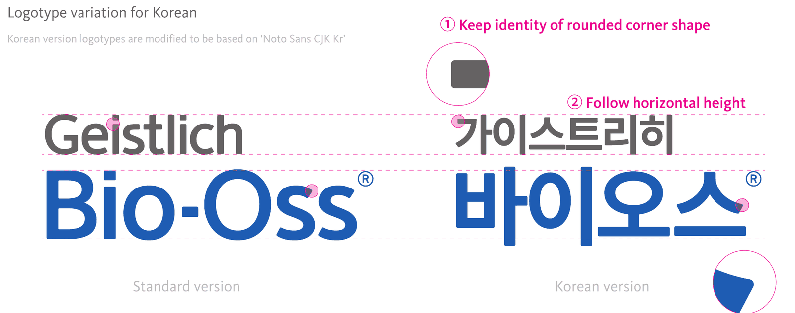

의사는 읽고 환자는 읽지 못하는 이름
치과 진료실에서 의사들은 이 뼈이식재를 '바이오스'라 불렀다. 하지만 공식 제품명은 'Geistlich Bio-Oss', 영문뿐이었다.
환자 쪽에서 보면, 들은 이름은 있는데 읽을 이름도 찾아볼 이름도 어디에도 없었다. 2018년 상반기, 가이스트리히코리아에서 이 제품에 처음으로 한글 이름과 로고타입을 붙였다.
의사에게는 충분한 이름
가이스트리히코리아는 스위스계 재생치의학 기업의 한국지사다. 영어에 익숙한 치과 의사들을 상대하는 B2B라 영문 이름만으로도 아쉬울 게 없었고, 이 제품은 교육과정에서 소개될 만큼 잘 알려져 있었다.
어려움은 의사가 환자에게 이 제품을 권하고 설명하는 순간에 생겼다. 의사만 상대하던 브랜드가 처음으로 환자를 상대해야 했다.
들은 대로 검색하면
환자는 영문 제품명을 읽지 못했다. 진료실에서 의사가 '바이오스' 하고 부르는 소리를 알아듣는 게 전부였다.
소리를 기억해 낸다 해도 끝이 아니었다. 컴퓨터 용어 BIOS와 발음이 같아서, 환자가 들은 대로 검색창에 넣으면 컴퓨터 이야기가 먼저 나왔다.
'가이스트리히 바이오스'
한글 이름은 진료실에서 의사들이 이미 자연스럽게 부르던 '바이오스'로 정했다. 읽기 쉽고 부르기 쉬운 데다, 무엇보다 환자가 귀로 들은 이름과 눈으로 읽는 이름이 같아진다.
검색에서 겹치는 문제는 이름을 억지로 바꿔서 풀지 않았다. 대신 '바이오스'는 반드시 '가이스트리히'와 함께 쓴다는 원칙을 세웠다. 포털에서 '가이스트리히 바이오스'로 찾으면 우리 제품에 정확히 닿게 하려는 의도였다.
이 원칙은 같은 시기에 도입한 네이버 브랜드검색에도 그대로 적용했다. 도입은 내가 맡아 진행했지만 혼자 한 일은 아니었고, 그 과정에서 검색 키워드를 정리했다.
Kievit과 Noto Sans 사이
다음은 글자 모양이었다. 본사는 영문 지정 서체로 Kievit을 쓰고 있었는데, Kievit에는 한글 자형이 아예 없었다. 그대로 옮겨 올 수가 없으니 인상만이라도 담아내기로 했다.
Kievit은 모서리가 직각으로 날카롭지만, 스위스 본사가 만든 영문 로고타입은 모서리를 둥글게 다듬어 두었다. 그래서 Noto Sans KR을 바탕에 두고 한글 로고타입을 만들되, 직각인 모서리를 영문 로고에 맞춰 둥글게 바꾸고 시각적인 글자 높이도 맞췄다. 회사명 '가이스트리히'도 같은 기준으로 제작해, 영문 로고처럼 두 이름을 위아래로 묶었다. 영문 제품명 옆에 놓았을 때 한 가족처럼 보이면 됐다.

서체 이야기는 글로벌 브랜드의 한글은 누가 지키나에서 이어진다.
환자가 보는 자리에만
로고타입은 환자와 직접 만나는 자리에만 썼다. '뼈이식'이라는 생소한 분야를 알리는 광고와, 치과 안에서 환자가 보는 광고물이 그 자리였다.
이름 하나로 인지도가 생기지는 않았다. 환자들에게는 여전히 '바이오스'보다 '스위스 뼈이식재'라는 말이 더 와닿았다. 부를 이름과 보여 줄 글자는 그때 갖췄고, 이 결과물은 가이스트리히코리아의 첫 한글 로고타입이 됐다. 그때 세운 '가이스트리히 바이오스'라는 표기는 8년이 지난 지금도 네이버에서 그대로 쓰이고 있다.